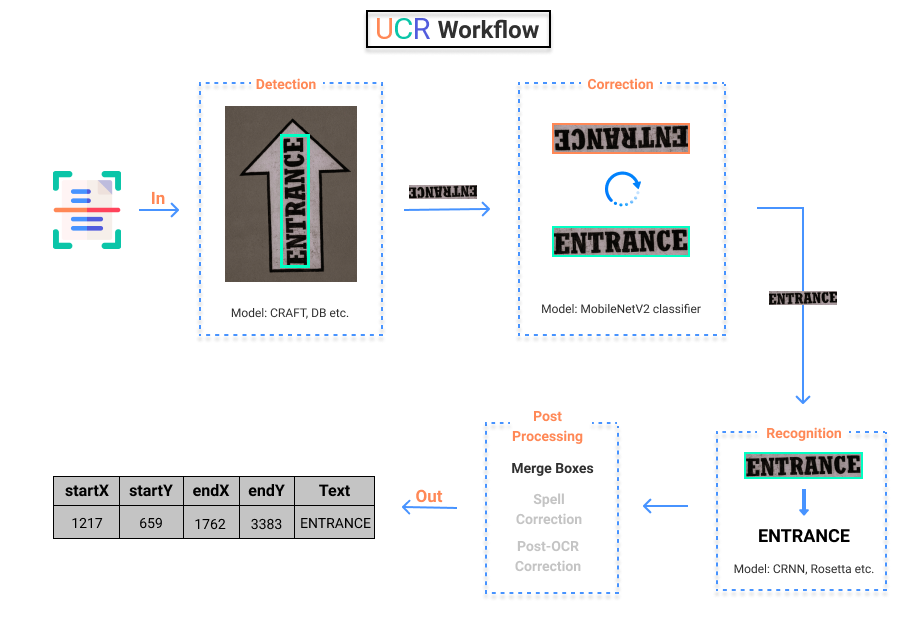

UCR
- TL;DR: Jump right into action by running pretrained models using CLI or Python scripts.
- Installation: Installation guide for Windows, Linux and Mac systems using pip or Docker containers.
- Tutorials: Find in-depth explanations of config parameters and Deep Learning components as well as training and testing scripts through Jupyter Notebooks.
- How to Contribute!: Learn how you can extend this library using custom trained models, datasets, new language support and/or new deep learning component(s).
- Reference: Detailed documentation of each Python file in UCR Repository with its respective functions and classes.
About
UCR is an Open Source, Easy to use Python library to build Production Ready OCR applications with its highly Intuitive, Modular & Extensible API design and off-the-shelf Pretrained Models for over 25 languages.
Features
- Supports SOTA Text Detection and Recognition models
- Built on top of Pytorch and Pytorch Lightning
- Supports over 25 languages
- Model Zoo contains 27 Pretrained Models across 25 languages
- Modular Design Language allows Pick and Choose of different components
- Easily extensible with Custom Components and attributes
- Hydra config enables Rapid Prototyping with multiple configurations
- Support for Packaging, Logging and Deployment tools straight out of the box
Note: Some features are still in active development and might not be available!
Workflow

Execution flow of UCR is displayed above. Broadly it can be divided into 4 sub-parts:
- Input (image/folder path or web address) is fed into the Detection model which outputs bounding box coordinates of all the text boxes.
- The detected boxes are then checked for Orientation and corrected accordingly.
- Next, Recognition model runs on the corrected text boxes. It returns bounding box information and OCR output.
- Lastly, an optional Post Processing module is executed to improve/modify the results.
Click Here to get started with the Code!
Acknowledgement
Substantial part of the UCR library is either inspired or inherited from the PaddleOCR library. Wherever possible the repository has been ported from PaddlePaddle to PyTorch framework including the direct translation of model parameters.
Also, a big thanks to Clova AI, for open sourcing their testing script and pretrained models (CRAFT).
A complete list of the Implemented Models along with their respective citation is tabulated here!